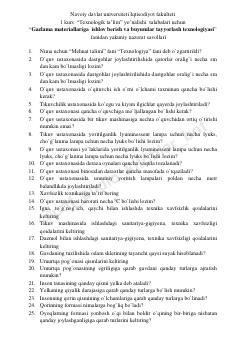

GMGazlama materiallariga ishlov berish va kiyim tayyorlash texnologiyasi bo'yicha nazorat savollari to'plami.
Ushbu qo'llanma Navoiy davlat universiteti talabalari uchun mo'ljallangan bo'lib, gazlama materiallariga ishlov berish va kiyim-kechak tayyorlash texnologiyasi bo'yicha yakuniy nazorat savollarini o'z ichiga oladi. Unda tikuvchilik ustaxonalarida xavfsizlik qoidalari, inson tanasi antropometriyasi, kiyim konstruksiyalash usullari va tikuv mashinalari tarixi yoritilgan.